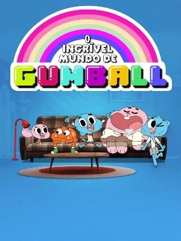
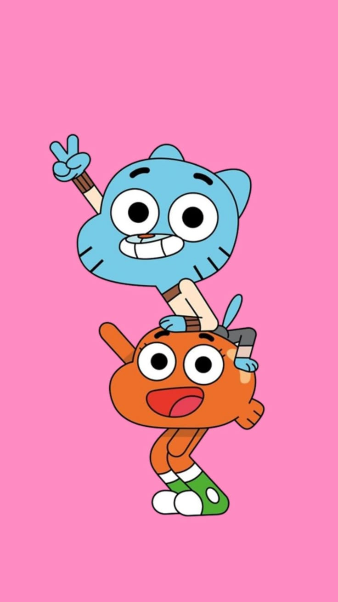
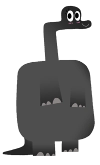
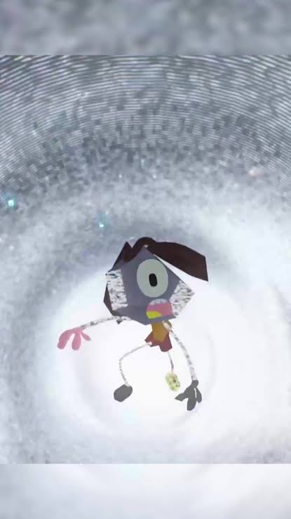
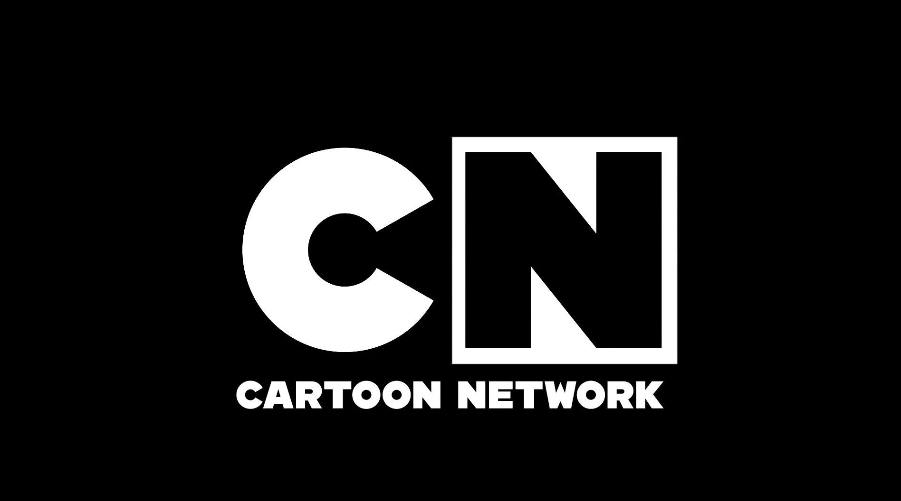

Capa do desenho
Início | Personagens | Compilados |
A série gira em torno da vida de Gumball Watterson, um gato de 11 anos de idade que frequenta a escola em Elmore e vive em uma linha do tempo onde as pessoas são animais, objetos, etc. Acompanhado de seu peixe de estimação, irmão adotivo, e melhor amigo Darwin Watterson. Eles frequentemente se veem envolvidos em várias confusões em torno da cidade. Durante tudo isso, ele também interage com os membros da família: Anais, Ricardo, Nicole, entre outros vários cidadãos.

Foto de Gumball e Darwin juntos
A história por trás do Vácuo e de Rob é, sem dúvidas, o arco mais sombrio e genial de O Incrível Mundo de Gumball. Tudo começa nas primeiras temporadas da animação, onde Rob era apenas um ciclope azul genérico que vagava pela escola de Elmore como um figurante sem importância. Por causa dessa total falta de relevância para o enredo, as próprias leis cósmicas do desenho o consideraram um "erro de continuidade". Como consequência direta, ele foi banido e apagado da realidade, sendo jogado no Vácuo — uma dimensão estática e misteriosa para onde o universo envia tudo aquilo que foi esquecido, obsoleto ou descartado pelos roteiristas.
Quando Gumball e Darwin viajam até essa dimensão cinzenta para resgatar outra amiga esquecida, Rob vê uma chance de salvação. Ele implora por ajuda, mas os irmãos não o ouvem em meio ao caos. Desesperado, ele se agarra à traseira da van de fuga e consegue cruzar o portal de volta ao mundo real, mas o preço cobrado pela física do Limbo é devastador: a estática e a gravidade do Vácuo deformam permanentemente sua estrutura, transformando-o em uma criatura poligonal, cheia de falhas visuais e pixelada. Sentindo-se abandonado e desfigurado, ele canaliza toda a sua frustração na figura de Gumball, declarando-se o arqui-inimigo oficial do gato azul e iniciando uma saga de vingança motivada por pura crise existencial.

Foto da amiga esquecida de Gumball e Darwin
No entanto, o ápice dessa trama revela que Rob nunca foi um vilão por pura maldade. Ao longo de suas idas e vindas, ele descobre uma verdade terrível sobre a própria realidade: o Vácuo está se expandindo e ameaça engolir toda a cidade de Elmore assim que o desenho animado chegar ao fim. No último episódio da série original, intitulado "A Inquisição", Rob arquiteta um plano drástico e se disfarça de humano, tentando transformar todos os estudantes em pessoas normais de live-action. Embora parecesse um ataque maldoso, era uma tentativa heroica e desesperada de dar uma "vida real" aos seus amigos, salvando-os do esquecimento eterno caso a animação fosse cancelada. Infelizmente, Gumball e sua turma arruinam o plano sem entender a gravidade da situação. O desenho termina de forma assustadora quando Rob acorda sozinho na escola à noite, vê o chão se desintegrar sob seus pés e cai novamente na escuridão do Vácuo, deixando o destino de todo o universo de Elmore em um completo mistério.

Rob caindo no vazio, maior segredo do desenho
O Incrível Mundo de Gumball (muitas vezes referido apenas como Gumball) é uma série animada britânica-americana de televisão criada por Ben Bocquelet para o Cartoon Network. É produzido principalmente pelo Cartoon Network Development Europe. A série estreou nos Estados Unidos com o episódio "O DVD" em 3 de maio de 2011 e no Brasil estreou com o episódio "O Responsável" em 4 de setembro de 2011. Segundo o site do Cartoon Network, O Incrível Mundo de Gumball é uma das séries mais populares no canal, junto com Hora de Aventura, Apenas Um Show e Steven Universo.
Ben Boquelet, criador do desenho

Cartoon Network, transmissora do desenho